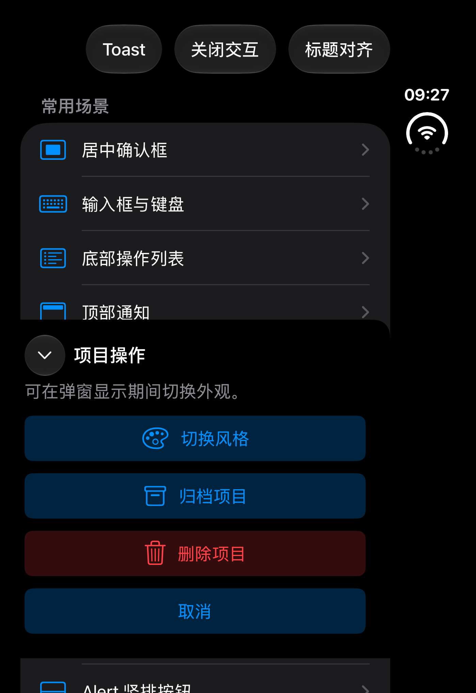
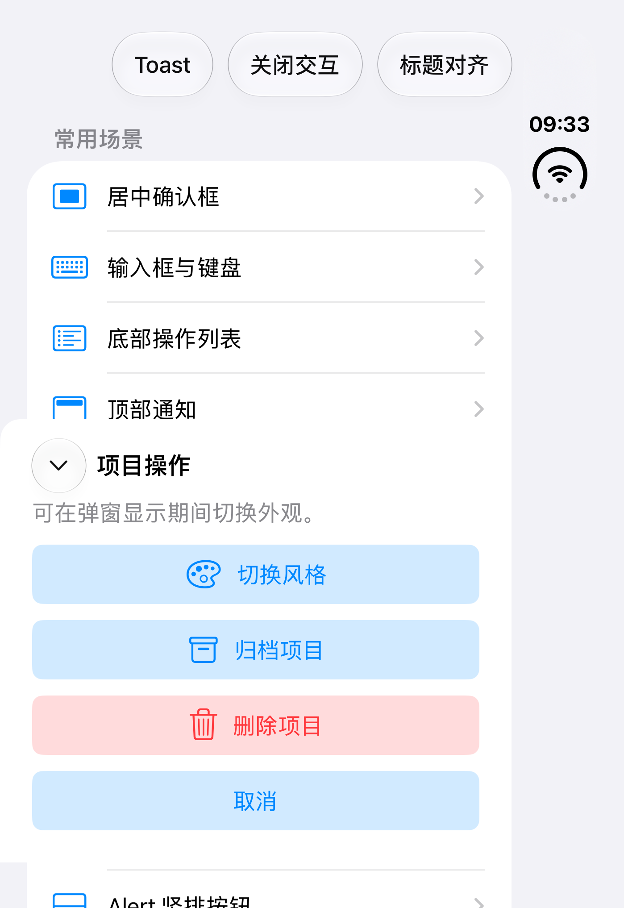

Demo「底部操作列表」场景 · BoneActionSheetView 默认样式实际渲染（深色外观）

同一用例在浅色外观下重跑通过 · 纯色 systemBackground 表面与无遮罩效果
对照阅读器默认样式的验证点
- 标题左侧向下箭头关闭按钮iOS 26+ 为液态玻璃圆圈按钮（40 × 40，`UIButton.Configuration.glass()`），箭头缩小至 12 点；早期系统回退半透明圆圈
- 圆角 16 点，仅顶部两角底部两角贴边为直角，与 ParsingBook 定制基类一致
- 纯色 systemBackground 表面非液态玻璃、非次级背景色
- 无背景遮罩底层列表保持原亮度，对应 isShowBackgroud = false
- 无抓手、无阴影面板顶部没有拖拽指示条
- 0.15 秒底部滑入阅读器定制动画时长
- 填满所在可用区、贴底宽度取可用区并受 560 点上限；Duo 竖屏的系统保留区不被跨越，面板填充所在侧栏，底缘避让主页指示器（本机实测 382 点宽、窗口 466 点）
- 截图中的标题为左对齐Demo「标题对齐」菜单默认左对齐，覆盖了预设；SDK 的
.bottomSheet 默认居中，左对齐时标题从关闭按钮右侧 8 点起排